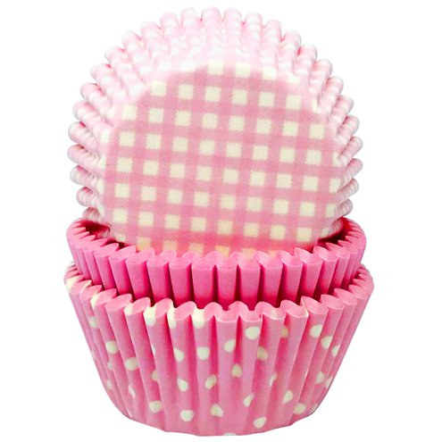
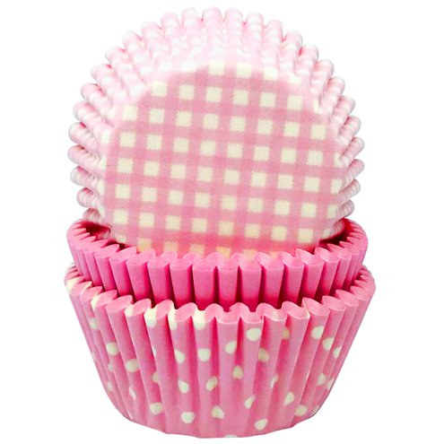

Ingredients
2 large egg white2 large egg yolks
160g all purpose flour (plain flour)
32g cornstarch
1/2 tsp baking powder
4tsp cocoa powder
1/4 tsp salt
60g butter, room temperature
200g granulated sugar
120ml vegetable or canola oil
2 tsp vanilla extract
1/2 tsp distilled white vinegar
Red food colouring
120ml buttermilk, room temperature
Cream Cheese Frosting
100g slightly salted butter, softened225g icing sugar
100g full fat cream cheese, stirred to loosen
Method
- Preheat oven to 350°F (177°C). Line a 12-count muffin pan with cupcake liners. This recipe makes 14 cupcakes, so you will have 2 cupcakes to bake in a 2nd batch.
- With a handheld or stand mixer fitted with a whisk attachment, beat 2 egg whites on high speed in a medium bowl until soft peaks form, about 2-3 minutes. Set aside.
- Sift the flour and cornstarch together to make sure it is evenly combined. Whisk this, along with baking soda, cocoa powder, and salt together in a medium bowl. Set aside.
- Using a handheld or stand mixer fitted with a paddle attachment, beat the butter on high speed until smooth and creamy – about 1 minute. Add the sugar and beat on high speed for 2 minutes until creamed together fairly well. Scrape down the sides and up the bottom of the bowl with a rubber spatula as needed. Add the oil and beat on high for 2 minutes. The butter may look “piece-y” and not completely combine with the oil. This is normal and ok.
- Add 2 egg yolks and the vanilla. Beat on medium-high speed until combined. Scrape down the sides and up the bottom of the bowl with a rubber spatula as needed. Beat in the vinegar and the food coloring– until you reach your desired color. I use 2 Tablespoons. With the mixer on low speed, add the dry ingredients in three additions alternating with the buttermilk, beginning and ending with the dry ingredients, and mixing each addition just until incorporated. Do not overmix. Fold whipped egg whites into cupcake batter with a rubber spatula or wooden spoon. The batter will be silky and slightly thick. (If there are still pieces of butter – and there were in 1 test batch for me – again, this is ok. They will melt inside as the cupcakes bake. Making them even more buttery.)
- Spoon batter into cupcake liners filling 1/2 - 2/3 of the way full. Bake for 20-21 minutes or until the tops of the cupcakes spring back when gently touched and a toothpick inserted in the center comes out clean. Don’t overbake; your cupcakes will dry out. Allow to cool in the pan for 5 minutes, then transfer to a rack to cool completely.
- Prepare cream cheese frosting. Beat together the butter and icing sugar using an electric whisk or by hand until pale and fluffy, about 3 mins, then beat in the cream cheese for a further 1-2 mins until well combined.
- Once the cakes are cool, use a piping bag fitted with a star nozzle to cover the cakes with the cream cheese icing, or dollop the icing on top using a spoon.
Equipment Needed:
 

- Muffin tray
- Cupcake liners
- Stand mixer or handheld mixer
- 2 Medium bowls
- Large mixing bowl
- Spatula
- Piping bag